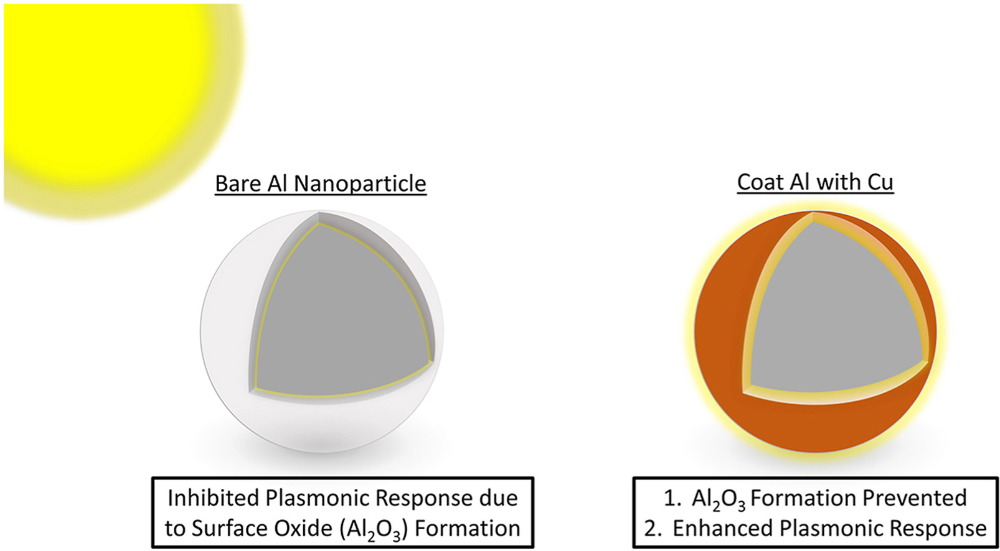

|
Research
I'm interested in improving the efficiency and scalability of a brand new class of devices called photo-batteries: where the anode/cathode are used for charge storage and electron generation. Here's a video explaining what photo-batteries are.
|
|
News
- (Aug 2021) Paper on effective refractive indexes of core-shell plasmonic nanoparticles published in Materialia
- (May 2021) Joined Neil Greenham's/Michael De Volder's groups (Physics/Engineering) for my PhD project on light-rechargeable photobatteries
- (Jan 2021) Joining Stephan Hoffman's group (ElecEng) for a lab-rotation on the characterization of 2D materials
- (Jan 2021) First author Paper on light-trapping in solar cells by Al-alloy plasmonic nanoparticles published in Sustainable Materials and Technologies
- (Nov 2020) Joining the groups of Roisin Owens (ChemEng) and Tuomas Knowles (Chemistry) for a lab-rotation on microfluidics for exosome detection
- (Nov 2020) One of only 8 receipients of the INAE Innovative Student Project Award for my undergraduate thesis!
- (Sep 2020) Joined the University of Cambridge for an MRes+PhD in Nanoscience and Nanotechnology!
- (Sep 2020) Graduated from IIT Madras with a CGPA of 8.90. Phew!
- (Sep 2020) Received the B. Krishnamurty Silver Medal for the best undergraduate thesis in Metallurgical and Materials Engineering at IIT Madras!
- (Sep 2020) Received the Shankar Dayal Sharma Gold Medal for the best all-round performance by an undergraduate student at IIT Madras (2016-20)!
- (Jul 2020) First author paper on the plasmonic properties of Al-Cu core-shell nanoparticles published in Materials Chemistry and Physics
- (Jun 2020) Defended my undergraduate thesis on modelling Al-based plasmonics at IIT Madras!
- (May 2019) Spending a summer at David Warsinger's group at Purdue ((MechEng) working on inverse opals nanomembranes
- (Apr 2017) Work on self-segrating smart dustbins featured in the Chennai Times!
- (May 2018) Spending a summer at Kabeer Jasuja's group at IIT GN (ChemEng) working on carbon quantum dots for mercury detection!
- (Apr 2017) Work on a mechanism for toilet seat sanitation featured in the Times of India!
- (Mar 2017) Part of a team which received the GYTI Award from the Government of India for our mechanism for toilet seat sanitation
|
|
|
Modelling core-shell plasmonic nanoparticles as homogenous systems: An effective refractive index approach
Abhimanyu Swaroop, Arvind Pujari, Tiju Thomas
Materialia
August 2021
Here, we present a novel method that determines an effective refractive index enabling spherical core-shell nanoparticles, of varying core and shell radii and material composition, to be represented as a single homogenous nanoparticle; thus allowing for quick, efficient and simple calculations with accuracies similar to that obtained by using analytical solutions given by Mie Theory.
|
|
|
Aluminium nanoparticles alloyed with other earth-abundant plasmonic metals for light trapping in thin-film a-Si solar cells
Arvind Pujari, Tiju Thomas
Sustainable Materials and Technologies
January 2021
In this report we study the light trapping ability of Al–Cu, Al–Au, Al–Ni, Al–In and Al–Mg alloys in an amorphous silicon solar cell. We use a combination of Mie Theory, Transfer Matrix Modelling and Effective Medium Theory to develop a simple numerical solution to this problem, and benchmark it against known theoretical results. Al–In and Al–Mg alloy nanoparticles emerge as the most suitable (of the candidates studied) for this application.
|
|

|
Al–Cu core-shell nanoparticles as an alternative to noble metal plasmonics: A computational study
Arvind Pujari, Tiju Thomas
Materials Chemistry and Physics
June 2020
New reports on the stabilization of Al(0) in water by coating it with a thin Cu shell have opened up a fresh avenue to explore corrosion resistant aluminum plasmonics. However, the effect of a Cu shell on the plasmonic properties of Al is hitherto unknown and needs to be understood. Moreover, almost no studies have been carried out on the optical properties of Al-core metallic-shell nanoparticles. Hence, for the first time, we report here a study on the absorption and scattering cross-sections of Al–Cu core shell nanoparticles (spheres, cubes and cuboids with a characteristic dimension between 50 and 100 nm) under an illumination of 300–900 nm.
|
|
|
Optically Transparent Electron Transport Layers for Light-Rechargeable Li-ion Photobatteries
Supervisors: Neil Greenham, Michael De Volder
MRes Thesis, Department of Physics/Engineering, University of Cambridge
May - Aug 2021
Here, we investigate whether fluorine-doped tin oxide coated on glass (FTO) can be used as a current collector for Li-ion photobatteries, and whether it’s relative transparency when compared to carbon felt can improve the electrochemical performance of light-rechargeable photobatteries. ZnO nanowires and mesoporous TiO2 layers are synthesized on the as transparent electron transport layers (ETLs) to ensure that photogenerated holes are blocked and to provide a favourable energy pathway for the extraction of photogenerated electrons.
|
|
|
Characterization of 2D WS2 grown by NaCl assisted MOCVD
Lab Rotation, Department of Electrical Engineering, University of Cambridge
Supervisor: Stephan Hofmann
Feb - April 2021
In this report, we attempt to correlate the quality of WS2 crystals (through Raman and PL spectra) with the amount of NaCl used through EDX spectroscopy. The effect of laser power on Raman and PL measurements are also considered. Raman and PL maps are analysed as a way to provide large-area information about the uniformity of the sample.
|
|
|
Detection of Ultra Low Concentrations of Exosomes Using Single Molecule Optofluidics
Supervisors: Roisin Owens, Tuomas Knowles
Lab Rotation, Department of Chemical Engineering & Biotechnology and Chemistry, University of Cambridge
Dec 2020 - Feb 2021
Here, we utilize a single molecule optofluidics setup combined with micro free flow electrophoresis for the sensing of exosomes and the CD63 protein present on their surface. We were able to record the concentration of exosomes in the picomolar regime and detect the number of binding sites per exosome, as well as their mobilities. Thus, we present a robust and scalable technique for the detection of exosomes and the proteins present on them.
|
|
|
Fabrication of crack-filled, free-standing IO membranes on aluminium and titanium substrates
Supervisor: David Warsinger
Summer Internship, Department of Mechanical Engineering, Purdue University
May - Jul 2019
Inverse opal membranes have long been gaining attention due to their size selectivity, chemical inertness and possible photocatalytic activity. Inverse Opals are typically grown on a silicon substrate. However, to use them as flow through membranes, they must be peeled off which results in their disintegration due to their fragility. To counter this problem, we propose a novel method which relies on growing IOs on a flat substrate, such as aluminium or titanium, and then making the substrate itself porous, through a process known as anodization.
|
|